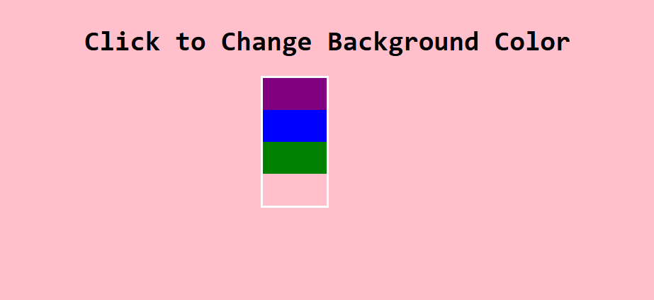
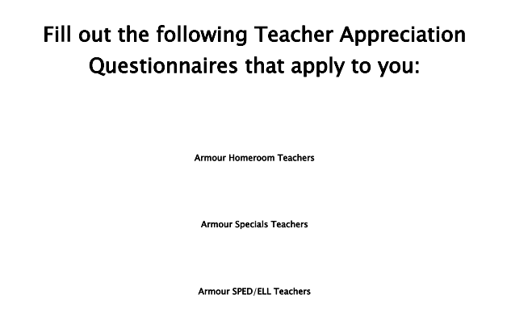

Home
Portfolio
Resume
Kat Kroeger Chen. Portfolio

created
Click the Color
website using using Java Script

The purpose of this webpage was achieved for the week of Teacher Appreciation, used to take survey's for the teachers. The survey links are no longer active.